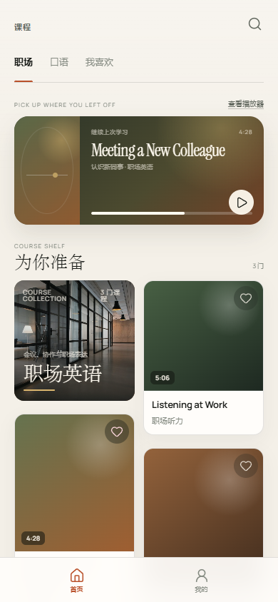
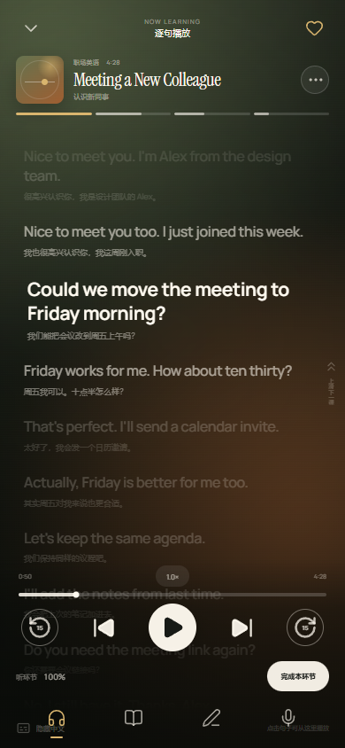
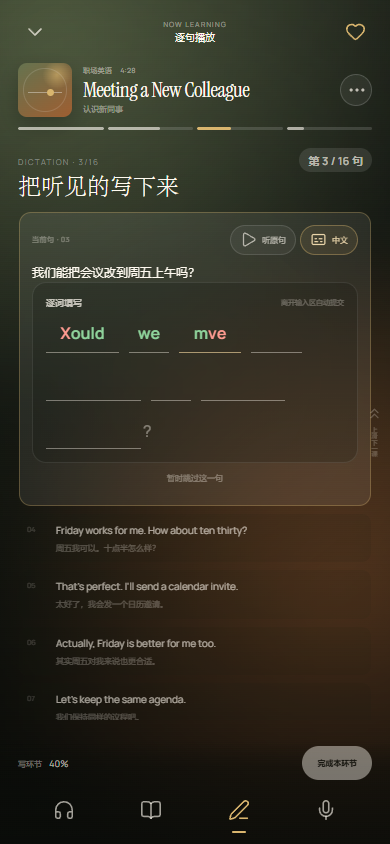

首页 · 课程探索
DISCOVERY修改前Before

修改后After

更明确的主角：继续学习卡和课程瀑布流不再被过多辅助标签分散；分类图更大、更接近作品封面。
播放器 · 沉浸与控制
LISTENING修改前Before

修改后After

更像聆听空间：当前句加入品牌细线标记，控制层采用完整的磨砂渐隐，字幕与操作区不再互相穿透。
写模式 · 逐词听写
DICTATION修改前Before

修改后After

操作更集中：去掉重复序号、提交按钮和输入框卡片外壳，逐词填空成为当前句内部唯一的核心操作。
设置 · 个人与显示
SETTINGS修改前Before

修改后After

从表单到纸面：去掉两个大白卡外壳，以细线和更大的编辑式标题组织设置，整体更像成熟产品而不是后台表单。